Window System with Automatic control and Fire Notification
In the case of opening window and being outside of house, the raindrops can come and wet the laundry.
In addition, In the case of when a fire occurs in an apartment, the fire can go through the open window
This study aims to integrate two devices using open source; a sensor that closes the window when it rains and enables the owner to control the window using blutooth from his or her smartphone. and a flame detecter.
Keywords : Automatic control, Smartphone, Bluetooth, Open source
1. Motivation
There will be more than one or two occasions where I have had a shower experience when I go outdoors with my window open. If you leave your laundry out of the way, you will have to do your laundry again, but there are molds around the windows that can be troublesome. In a building like an apartment, a fire alarm is located in the kitchen or in the center of the water, but in the event of a fire, it is very likely to spread with the wind through windows. Therefore, in this paper, it is automatically closed when rain comes, and it is a goal to integrate a device that controls the degree of opening of a window through a Bluetooth connection of an individual smartphone and a device that notifies a siren when a flame is detected.
2. Development Environment And Sensor Used
It was developed by the editions of Windows 10 Education, using Arduino IDE version 1.8.5 and Google App Inventor 2
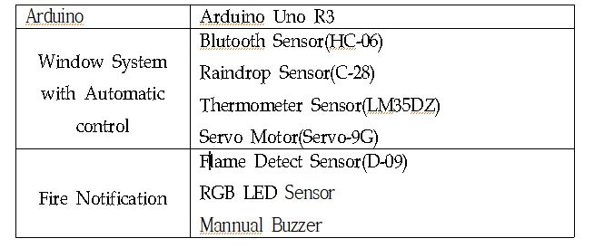 Sensor Chart3. Use open source
Using the ArduinoThread (MIT lisence) of ivanseidel, we paralleled the automatic control function and the fire notification function, and operated the servomotor to move the window using the Servo (GNU language).
4. Features and Interfaces
When the device was turned on, the window control and flame detection sensors were paralleled by alternating operations at 1ms intervals by the Thread library. Users can download the app created with App Inventor and operate it, and the current temperature can be checked through Arduino's temperature sensor. When you press the window automatic setting button when you go out, when the water comes into the rain water sensor, the resistance value decreases. If the value falls below the set value, the window automatically closes. If it exceeds the set value, the window is opened for ventilation. In addition, you can control the degree of opening fully closed, half open / close, fully open.
The flame detection sensor is measured at intervals of 200 ms. In normal times, the RGB LED keeps the green light, and when a certain flame is detected, the red light is flickered and the siren is set to sound.
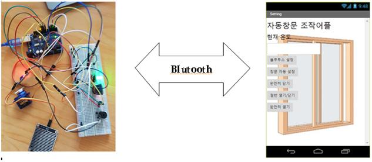 Picture of connented curcuit & ApplicationPrototypes
4. Experiments and results
In order to check the operation of the device, it was confirmed that each part was processed in parallel by connecting the power source. After setting the value of each rain sensor and flame sensor at a medium value, I can confirm that it works.
5. Conclusion
There are many people who are affected by ever-changing climate change. In this paper, we have designed and developed automatic control windows and fire notification window devices and applications to solve these problems, and confirmed that they work properly. It is expected that this will provide not only convenience, but also a safer preparation for safety.
If you want to know more GitHub Page.
Hwasun Local Swimming Pool Management Database Program
1. Motivation
When I was in vacation, I would go swimming with my friends and a public facility in Hwasun County near the area. The purpose is to create a database program to manage this swimming facility.
2. Purpose of Development
Although there are staff members in the facility, realistic swimwear rental management, sale of goods, and facility use time are not managed. The aim of this program is to compensate for the insufficiency of such management.
3. Development Environment
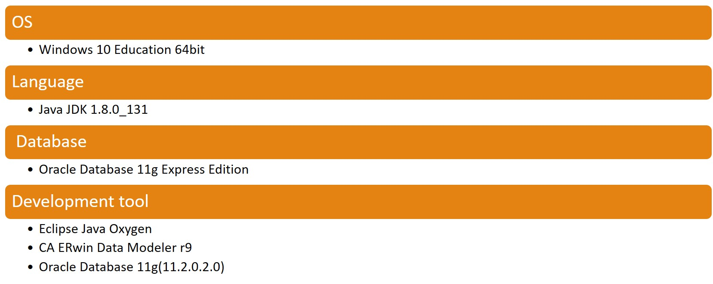 Development Environment4. Requirements Analysis
Hwasun Pool is available to members who have registered with their name, age, address, and mobile phone number, and several swimming instructors give swimming lessons.
Members can log in to the management system with their membership number and password that they were given when they joined and they can see their last use date.
Instructors in the institute have their instructor's number, password, name, age, and telephone number, manage the facilities such as the internal vault, and view the status of each facility.
There are consumables such as medicines for managing the quality of the water in the swimming pool, and there are an article number, an article name, and a quantity. If the facility is out of order, you can view the saved AS center list, center number, center name, and phone number.
There are places to rent swimwear, swimwear and goggles in the swimming pool, and you can see the item number, the name of the item, the rental status, and the rental fee.
You can also buy beverages and sweets from the convenience store.
The price, product name, product number, and quantity of each item are stored. The convenience store stores the purchase details of the members and stores the information of the connected suppliers. The supplier consists of the business registration number, location, telephone number, company name, and account number.
5. Conceptual Design
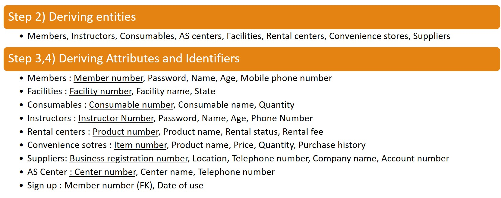 Conceptual design1 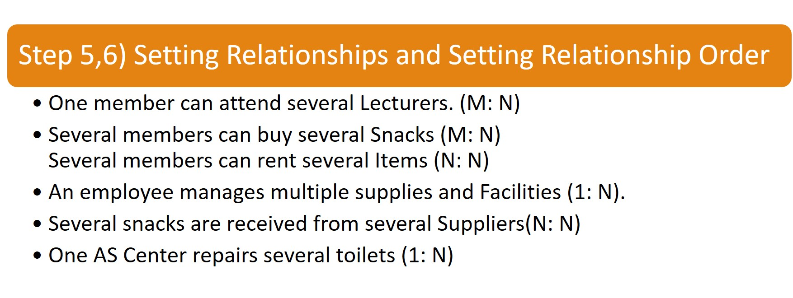 Conceptual design2 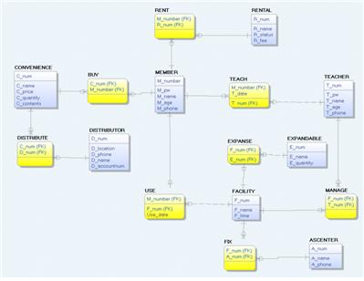 Identify Relationships 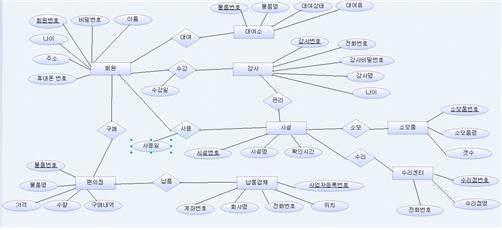 Create ERWin-ERD6. Physical Design
1) DataBase Schema
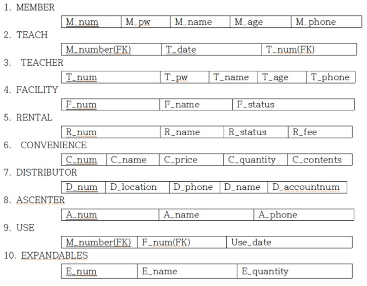 DataBase Schema2) State of DataBase
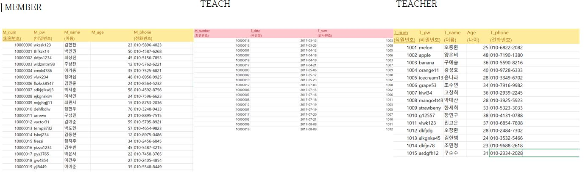 Example Of 12 Table3) Normalization
(1) First Normalization
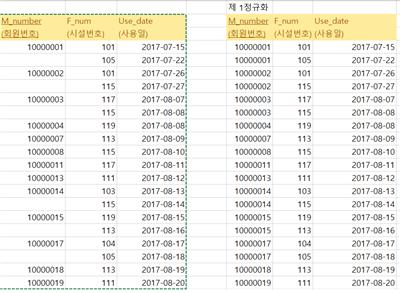 USE TABLE's First Normalization(2) Second Normalization
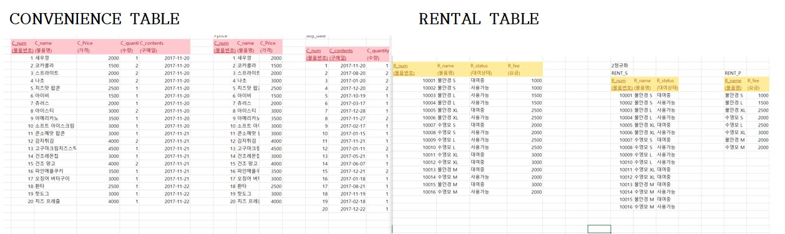 Second Normalization4) Working with SQL Query Statements
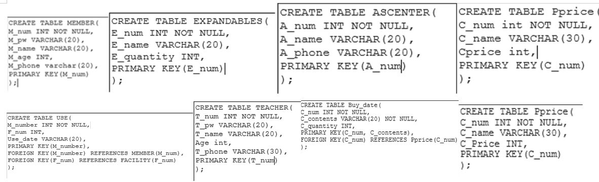 Create a Total Of 12 Tables7. Implementation and Demos
1) Java Projects
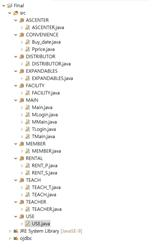 Java Projects on Eclipse2) GUI
Member's Login 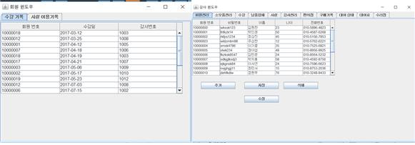 Member Windows and Instructor Windows3) Demonstration
8. Conclusion
It was a long time to find a subject that was interesting to me at first, but it seemed that I started to work even harder because it was the subject that I have attached to it. In the case of a login implementation in Oracle, I had to compare whether the value received from the text field matches the value in the database, but it took some time to understand it because I did not know how to use the function in jdbc. It was most impressive to use Java to access and influence other areas of Oracle, and I thought it would be useful for future projects.